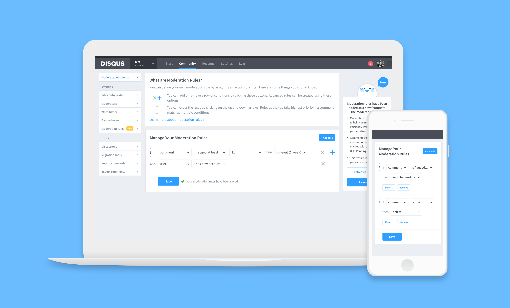
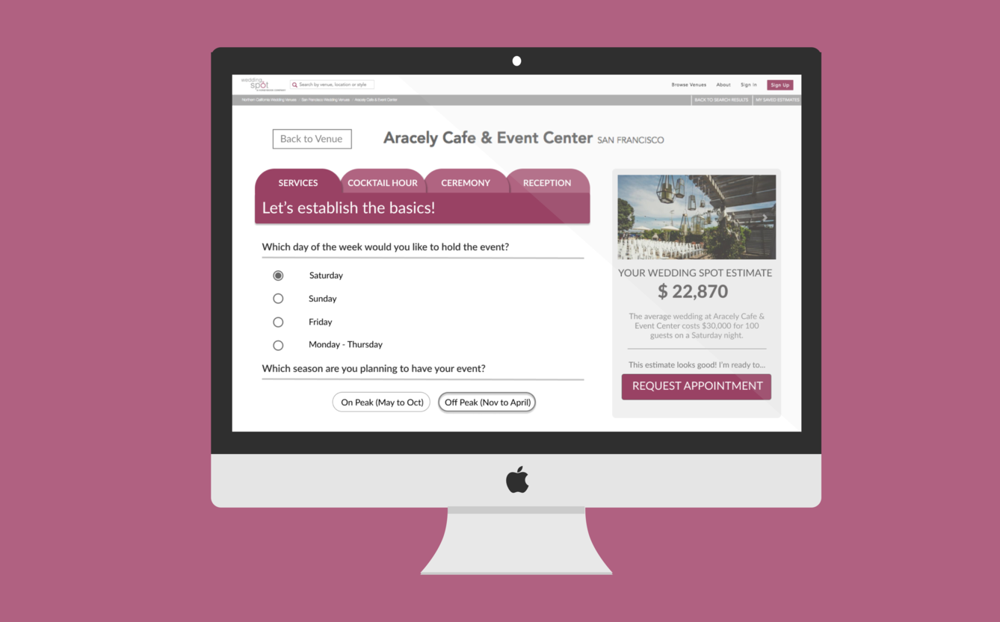
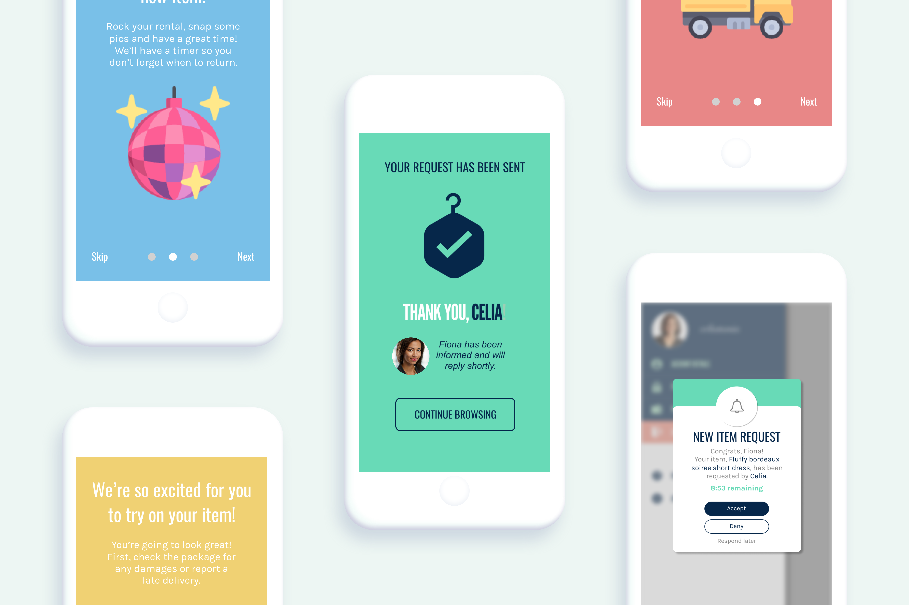

← back home
check back later for full case studies.
atlassian

Empowering people to feel comfortable organizing their workspaces.
Product Design Intern, Summer 2019
TBD :~o
disqus

Improving moderation tools for publishers.
Product Design Intern, Summer 2018
User research, ideating, prototyping, usability testing, design QA.
ubiquity press
Revamping academic publication accessibility for readers and publishers.
Berkeley Innovation Consultant, Spring 2017
User research, ideation, prototyping (Figma + Invision), testing
honeybook (nda)

Improving the wedding planning experience by matching people to venues.
Berkeley Innovation Consultant, Fall 2017
User research, ideation, prototyping (Figma + Invision), testing
pond

Creating a VR experience that encourages relaxation through fishing.
CS 198: Virtual Design Decal
3D modeling (Maya), sound design, game design (Unity), programming (C#)
fidgetblox

Prototyping customizable and sustainable fidgeting gadgets to boost attention.
DES INV 190-2: Global Product Development
User research, usability testing, ideation, physical product design, packaging
invisible disabilities

Addressing stigma against the invisible disability community in public transit spaces.
DES INV 190-1: Reimagining Mobility
User research, ideation, visual design, public space design
hangurs (nda)

Designing a digital marketplace and delivery system for secondhand clothing.
Geekbears, UI/UX Design Intern, Oct 2017 - May 2018
User research, ideation, branding, prototyping, design QA